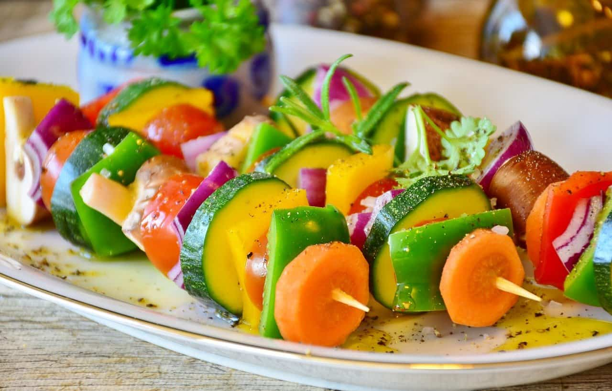

Una historia filosófica de los jardines, nos cuenta sobre estos espacios como una terapia a algunas enfermedades, desde esa reconexión con la naturaleza, los procesos de aprendizaje de los jardines.
Ver pagina

Los océanos, que ocupan 2/3 partes de nuestro planeta, entre otros aportes, protegen a la tierra del cambio climático y proveen alimento: más de 100 millones de toneladas de pescado al año son para el consumo humano.
Ver pagina

Esta selección no está solamente pensada para los vegetarianos, sino también para los que aman este tipo de platos, aunque tengan una alimentación más variada, o simplemente para quienes buscan recetas ricas y económicas, porque ni falta hace decir que cocinar con vegetales suele ser amigable con el bolsillo.
Ver pagina